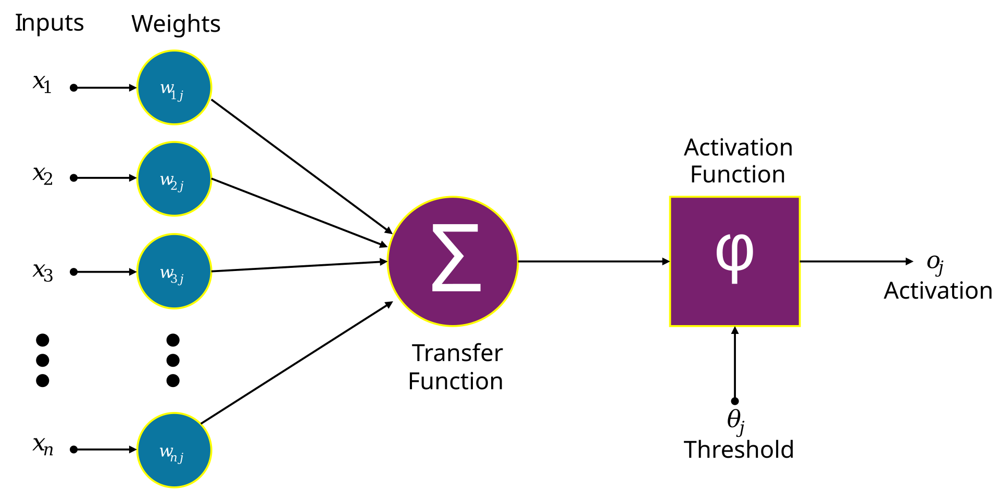

Rețelele neurale sunt utilizate în multe domenii moderne.

Printre cele mai importante aplicații se numără recunoașterea facială, traducerea automată, diagnosticarea medicală și conducerea autonomă. Aceste tehnologii devin tot mai prezente în viața de zi cu zi.